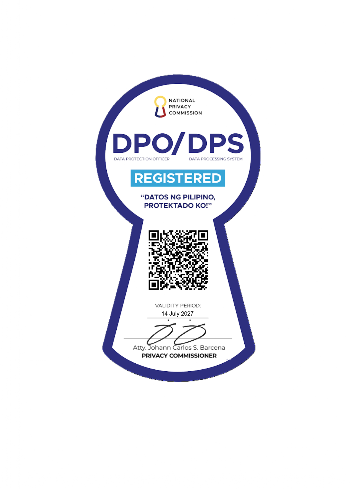
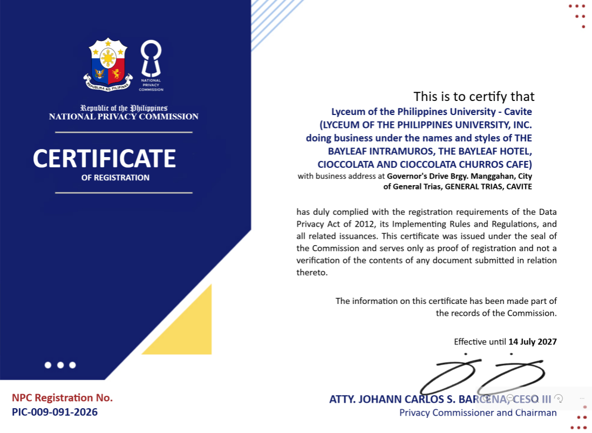

About
What is an LMS?
In education at the Lyceum of the Philippines University (LPU), an LMS (Learning Management System) refers to myLPU, an online digital platform used to plan, deliver, and manage blended, face-to-face, and distance learning classes
About LPU
A young and thriving university, LPU Cavite was established in 2008. Within a few years, the university immediately gained global reach. Our culture of collaboration sparks discoveries that advance society and drive economic impact. We are dedicated to first-rate education while making groundbreaking discoveries. Our students are integral parts in our pursuit of nation building.
Our 16-hectare campus is located in the heart of Cavite, a city known as the “Land of the Brave”, rich in its history, landmarks, museums, and facilities for leisure. Our faculty are leaders in their fields, passionate about teaching, and pushing the boundaries of knowledge. With an average class size of 40, we cultivate a rich student-faculty relationship which remains common and collaborative.
Our Alumni make us proud. They are leaders and innovators in the many professions and pursuits shaping society today. Lyceans are proud contributors to the different sectors of our modern world, in hospitality, law, nursing, business, engineering, and fine arts. We invite you to explore your future opportunities with us through truth and fortitude, for God and country.
Our History
Founded in 1952, LPU continues its drive towards academic excellence and quality education with International Accreditations as the First University in the Philippines to be granted Full International Accreditation for Hotel & Restaurant Management and Tourism (Undergraduate and Graduate Programs) by International Centre of Excellence in Tourism and Hospitality Education (THE-ICE) and Philippines’ First Educational Institution certified by Investors-in-People International with the Silver Award.
Mission and Vision
Mission
The Lyceum of the Philippines University, espousing the ideals of Jose P. Laurel, is committed to the following missions:
- Provide industry-based knowledge and skills –
INSTRUCTION
- Undertake multi-disciplinary research –
RESEARCH
- Support community engagement and social responsibility –
COMMUNITY ENGAGEMENT
- Establish local and international linkages.-
INSTITUTIONAL DEVELOPMENT
- Produce sustainability advocates for global action –
SUSTAINABILITY
Vision
An internationally accredited university by 2030, dedicated to innovation and excellence in the service of God and country.
Stakeholders
The primary stakeholders of Lyceum of the Philippines University – Cavite include internal groups like students, faculty, and staff, as well as external partners such as alumni, industry associations, and local communities.
School Certificates
National Privacy Commission Certificate of Registration
This is to certify that Lyceum of the Philippines University has duly complied with the registration of the Data Privacy Act of 2012, its Implementing Rules and Regulations, and all related issuances.

